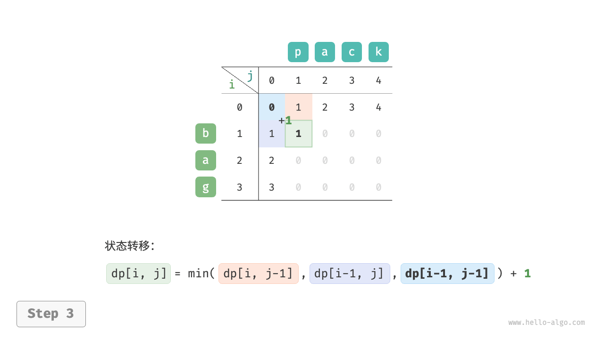
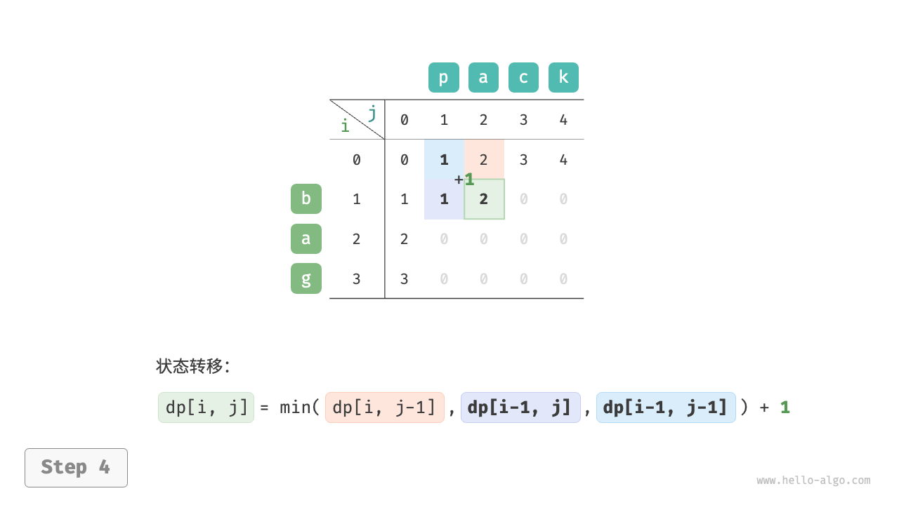
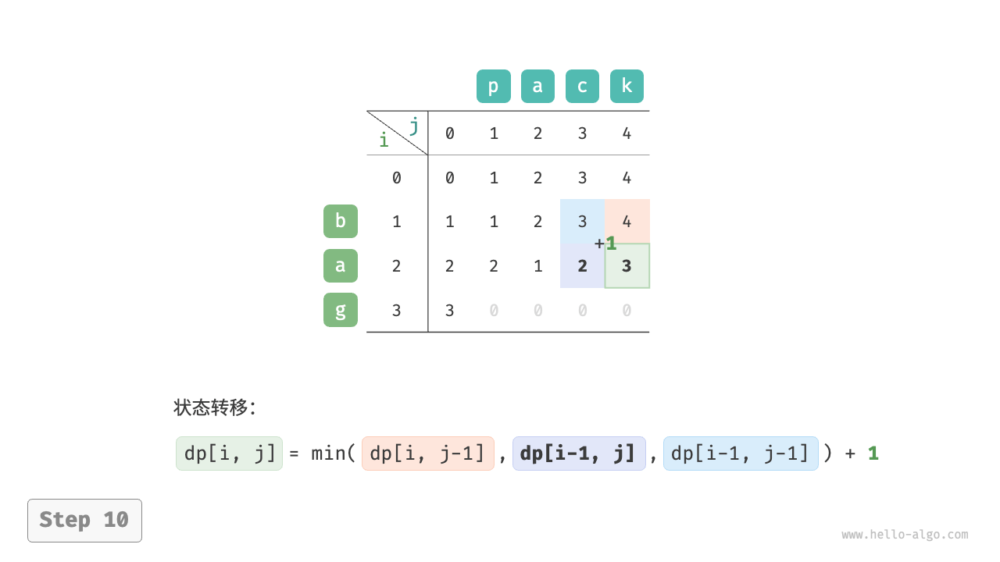

编辑距离问题
编辑距离，也称 Levenshtein 距离，指两个字符串之间互相转换的最少修改次数，通常用于在信息检索和自然语言处理中度量两个序列的相似度。
!!! question
输入两个字符串 $s$ 和 $t$ ，返回将 $s$ 转换为 $t$ 所需的最少编辑步数。
你可以在一个字符串中进行三种编辑操作：插入一个字符、删除一个字符、将字符替换为任意一个字符。
如下图所示，将 kitten 转换为 sitting 需要编辑 3 步，包括 2 次替换操作与 1 次添加操作；将 hello 转换为 algo 需要 3 步，包括 2 次替换操作和 1 次删除操作。
编辑距离问题可以很自然地用决策树模型来解释。字符串对应树节点，一轮决策（一次编辑操作）对应树的一条边。
如下图所示，在不限制操作的情况下，每个节点都可以派生出许多条边，每条边对应一种操作，这意味着从 hello 转换到 algo 有许多种可能的路径。
从决策树的角度看，本题的目标是求解节点 hello 和节点 algo 之间的最短路径。
动态规划思路
第一步：思考每轮的决策，定义状态，从而得到 $dp$ 表
每一轮的决策是对字符串 $s$ 进行一次编辑操作。
我们希望在编辑操作的过程中，问题的规模逐渐缩小，这样才能构建子问题。设字符串 $s$ 和 $t$ 的长度分别为 $n$ 和 $m$ ，我们先考虑两字符串尾部的字符 $s[n-1]$ 和 $t[m-1]$ 。
- 若 $s[n-1]$ 和 $t[m-1]$ 相同，我们可以跳过它们，直接考虑 $s[n-2]$ 和 $t[m-2]$ 。
- 若 $s[n-1]$ 和 $t[m-1]$ 不同，我们需要对 $s$ 进行一次编辑（插入、删除、替换），使得两字符串尾部的字符相同，从而可以跳过它们，考虑规模更小的问题。
也就是说，我们在字符串 $s$ 中进行的每一轮决策（编辑操作），都会使得 $s$ 和 $t$ 中剩余的待匹配字符发生变化。因此，状态为当前在 $s$ 和 $t$ 中考虑的第 $i$ 和第 $j$ 个字符，记为 $[i, j]$ 。
状态 $[i, j]$ 对应的子问题：将 $s$ 的前 $i$ 个字符更改为 $t$ 的前 $j$ 个字符所需的最少编辑步数。
至此，得到一个尺寸为 $(i+1) \times (j+1)$ 的二维 $dp$ 表。
第二步：找出最优子结构，进而推导出状态转移方程
考虑子问题 $dp[i, j]$ ，其对应的两个字符串的尾部字符为 $s[i-1]$ 和 $t[j-1]$ ，可根据不同编辑操作分为下图所示的三种情况。
- 在 $s[i-1]$ 之后添加 $t[j-1]$ ，则剩余子问题 $dp[i, j-1]$ 。
- 删除 $s[i-1]$ ，则剩余子问题 $dp[i-1, j]$ 。
- 将 $s[i-1]$ 替换为 $t[j-1]$ ，则剩余子问题 $dp[i-1, j-1]$ 。

根据以上分析，可得最优子结构：$dp[i, j]$ 的最少编辑步数等于 $dp[i, j-1]$、$dp[i-1, j]$、$dp[i-1, j-1]$ 三者中的最少编辑步数，再加上本次的编辑步数 $1$ 。对应的状态转移方程为：
$$ dp[i, j] = \min(dp[i, j-1], dp[i-1, j], dp[i-1, j-1]) + 1
$$
请注意，当 $s[i-1]$ 和 $t[j-1]$ 相同时，无须编辑当前字符，这种情况下的状态转移方程为：
$$ dp[i, j] = dp[i-1, j-1]
$$
第三步：确定边界条件和状态转移顺序
当两字符串都为空时，编辑步数为 $0$ ，即 $dp[0, 0] = 0$ 。当 $s$ 为空但 $t$ 不为空时，最少编辑步数等于 $t$ 的长度，即首行 $dp[0, j] = j$ 。当 $s$ 不为空但 $t$ 为空时，最少编辑步数等于 $s$ 的长度，即首列 $dp[i, 0] = i$ 。
观察状态转移方程，解 $dp[i, j]$ 依赖左方、上方、左上方的解，因此通过两层循环正序遍历整个 $dp$ 表即可。
代码实现
"Python"
def edit_distance_dp(s: str, t: str) -> int: """编辑距离：动态规划""" n, m = len(s), len(t) dp = [[0] * (m + 1) for _ in range(n + 1)] // 状态转移：首行首列 for i in range(1, n + 1): dp[i][0] = i for j in range(1, m + 1): dp[0][j] = j // 状态转移：其余行和列 for i in range(1, n + 1): for j in range(1, m + 1): if s[i - 1] == t[j - 1]: // 若两字符相等，则直接跳过此两字符 dp[i][j] = dp[i - 1][j - 1] else: // 最少编辑步数 = 插入、删除、替换这三种操作的最少编辑步数 + 1 dp[i][j] = min(dp[i][j - 1], dp[i - 1][j], dp[i - 1][j - 1]) + 1 return dp[n][m]"C++"
/* 编辑距离：动态规划 */ int editDistanceDP(string s, string t) { int n = s.length(), m = t.length(); vector<vector<int>> dp(n + 1, vector<int>(m + 1, 0)); // 状态转移：首行首列 for (int i = 1; i <= n; i++) { dp[i][0] = i; } for (int j = 1; j <= m; j++) { dp[0][j] = j; } // 状态转移：其余行和列 for (int i = 1; i <= n; i++) { for (int j = 1; j <= m; j++) { if (s[i - 1] == t[j - 1]) { // 若两字符相等，则直接跳过此两字符 dp[i][j] = dp[i - 1][j - 1]; } else { // 最少编辑步数 = 插入、删除、替换这三种操作的最少编辑步数 + 1 dp[i][j] = min(min(dp[i][j - 1], dp[i - 1][j]), dp[i - 1][j - 1]) + 1; } } } return dp[n][m]; }"Java"
/* 编辑距离：动态规划 */ int editDistanceDP(String s, String t) { int n = s.length(), m = t.length(); int[][] dp = new int[n + 1][m + 1]; // 状态转移：首行首列 for (int i = 1; i <= n; i++) { dp[i][0] = i; } for (int j = 1; j <= m; j++) { dp[0][j] = j; } // 状态转移：其余行和列 for (int i = 1; i <= n; i++) { for (int j = 1; j <= m; j++) { if (s.charAt(i - 1) == t.charAt(j - 1)) { // 若两字符相等，则直接跳过此两字符 dp[i][j] = dp[i - 1][j - 1]; } else { // 最少编辑步数 = 插入、删除、替换这三种操作的最少编辑步数 + 1 dp[i][j] = Math.min(Math.min(dp[i][j - 1], dp[i - 1][j]), dp[i - 1][j - 1]) + 1; } } } return dp[n][m]; }
如下图所示，编辑距离问题的状态转移过程与背包问题非常类似，都可以看作填写一个二维网格的过程。
"<1>"

"<2>"

"<3>" 
"<4>" 
"<5>"

"<6>"

"<7>"

"<8>"
"<9>"
"<10>" 
"<11>"

"<12>"
"<13>"

"<14>"

"<15>"

空间优化
由于 $dp[i,j]$ 是由上方 $dp[i-1, j]$、左方 $dp[i, j-1]$、左上方 $dp[i-1, j-1]$ 转移而来的，而正序遍历会丢失左上方 $dp[i-1, j-1]$ ，倒序遍历无法提前构建 $dp[i, j-1]$ ，因此两种遍历顺序都不可取。
为此，我们可以使用一个变量 leftup 来暂存左上方的解 $dp[i-1, j-1]$ ，从而只需考虑左方和上方的解。此时的情况与完全背包问题相同，可使用正序遍历。代码如下所示：
"Python"
def edit_distance_dp_comp(s: str, t: str) -> int: """编辑距离：空间优化后的动态规划""" n, m = len(s), len(t) dp = [0] * (m + 1) // 状态转移：首行 for j in range(1, m + 1): dp[j] = j // 状态转移：其余行 for i in range(1, n + 1): // 状态转移：首列 leftup = dp[0] // 暂存 dp[i-1, j-1] dp[0] += 1 // 状态转移：其余列 for j in range(1, m + 1): temp = dp[j] if s[i - 1] == t[j - 1]: // 若两字符相等，则直接跳过此两字符 dp[j] = leftup else: // 最少编辑步数 = 插入、删除、替换这三种操作的最少编辑步数 + 1 dp[j] = min(dp[j - 1], dp[j], leftup) + 1 leftup = temp // 更新为下一轮的 dp[i-1, j-1] return dp[m]"C++"
/* 编辑距离：空间优化后的动态规划 */ int editDistanceDPComp(string s, string t) { int n = s.length(), m = t.length(); vector<int> dp(m + 1, 0); // 状态转移：首行 for (int j = 1; j <= m; j++) { dp[j] = j; } // 状态转移：其余行 for (int i = 1; i <= n; i++) { // 状态转移：首列 int leftup = dp[0]; // 暂存 dp[i-1, j-1] dp[0] = i; // 状态转移：其余列 for (int j = 1; j <= m; j++) { int temp = dp[j]; if (s[i - 1] == t[j - 1]) { // 若两字符相等，则直接跳过此两字符 dp[j] = leftup; } else { // 最少编辑步数 = 插入、删除、替换这三种操作的最少编辑步数 + 1 dp[j] = min(min(dp[j - 1], dp[j]), leftup) + 1; } leftup = temp; // 更新为下一轮的 dp[i-1, j-1] } } return dp[m]; }"Java"
/* 编辑距离：空间优化后的动态规划 */ int editDistanceDPComp(String s, String t) { int n = s.length(), m = t.length(); int[] dp = new int[m + 1]; // 状态转移：首行 for (int j = 1; j <= m; j++) { dp[j] = j; } // 状态转移：其余行 for (int i = 1; i <= n; i++) { // 状态转移：首列 int leftup = dp[0]; // 暂存 dp[i-1, j-1] dp[0] = i; // 状态转移：其余列 for (int j = 1; j <= m; j++) { int temp = dp[j]; if (s.charAt(i - 1) == t.charAt(j - 1)) { // 若两字符相等，则直接跳过此两字符 dp[j] = leftup; } else { // 最少编辑步数 = 插入、删除、替换这三种操作的最少编辑步数 + 1 dp[j] = Math.min(Math.min(dp[j - 1], dp[j]), leftup) + 1; } leftup = temp; // 更新为下一轮的 dp[i-1, j-1] } } return dp[m]; }